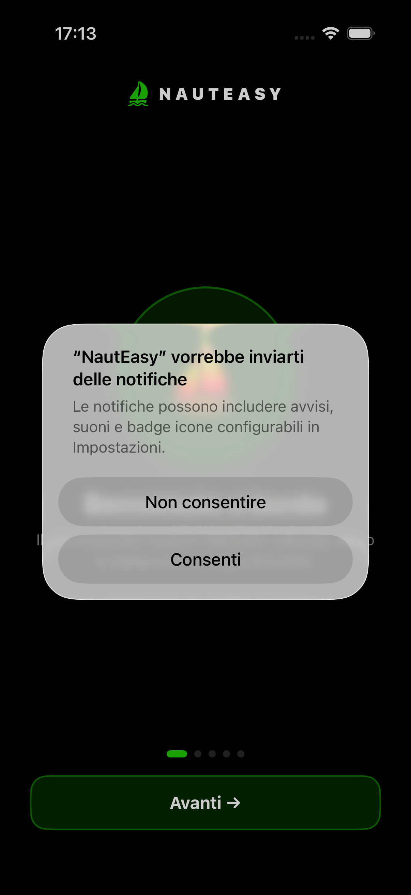
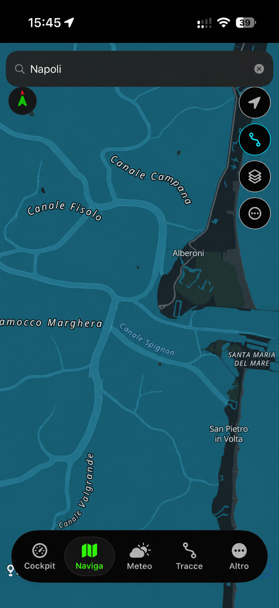

Cockpit principale
Screenshot app: cockpit, GPS e stato di navigazione.
Schermate e concept raccolti dai thread di sviluppo. Il nastro BETA è intenzionale: alcune immagini mostrano prototipi, rendering o funzioni ancora in validazione.

Screenshot app: cockpit, GPS e stato di navigazione.

PoC cartografica: rendering e routing sono ancora sperimentali.

Rendering/POC del profilo barca, non ancora flusso produttivo.
Le immagini non rappresentano una promessa di disponibilità, accuratezza nautica o conformità normativa. Prima di salpare, verifica sempre le fonti ufficiali e le condizioni reali.